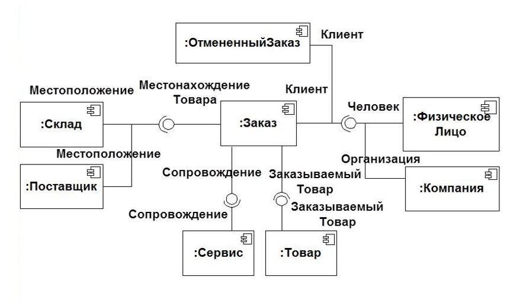

Кто были три инженера-программиста, разработавшие UML?
Какова цель UML?
В каких отраслях используется UML?
Стандартной практической нотацией для разработчиков, а также для руководителей проектов, владельцев
бизнеса, технических предпринимателей и специалистов из разных отраслей является?
Для чего используется UML?
Основными типами диаграмм UML являются…
К структурированным диаграммам не относится
О какой диаграмме идет речь – «Часто эта диаграмма используется как способ проверить диаграмму
классов на точность. Другими словами, будет ли это работать на практике? Она показывает системные
объекты и их взаимосвязи и предлагает лучшее представление о потенциальных недостатках проекта,
которые необходимо исправить.»
Какая диаграмма представлена на рисунке?

Укажите полный перечень основных обозначения в UseCase – диаграмме
Каких объектов в диаграмме последовательности не существует?